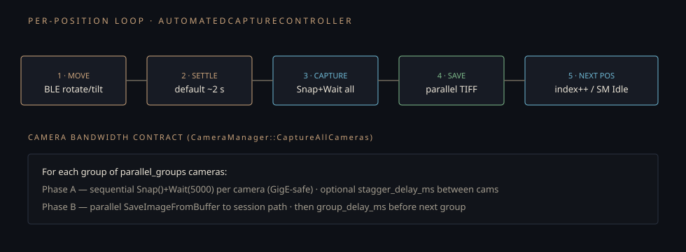

Monograph · 02 · Hardware · cameras
Foundations · cameras
Hardware · cameras
Owns Sapera integration: discovery, connect, Snap/Wait, color conversion, parallel group capture. Must not own turntable motion (ch.03) or session path policy (ch.05). Done when a reader can explain why Snap is sequential and save can be parallel.
Role
CameraManager is a singleton wrapping Teledyne DALSA Sapera.
It discovers GigE devices, connects transfer+buffer pairs, and captures ordered multi-camera stacks into a directory path supplied by the session layer.
Data model · CaptureParams
// thread-safe params passed by value into CaptureAllCameras struct CaptureParams {{ int parallel_groups = 1; // cameras attempted per group int group_delay_ms = 750; // pause between groups int stagger_delay_ms = 150; // delay within group policy }};
Each 4112×3008 frame is on the order of tens of MB. Saturating a 1 Gbps link with overlapping transfers was observed to crash Sapera — hence sequential Snap+Wait.
End-to-end · CaptureAllCameras
- Validate parallel_groups ≥ 1, delays ≥ 0; clamp groups to camera count
- Warn if parallel_groups > 1 && stagger_ms < 20 (bandwidth risk)
create_directories(session_path)- Build cameras_to_capture from discovered ∩ connected \ disabled
- For each group slice of size parallel_groups:
- Phase gather: lock mutex, collect SapAcqDeviceToBuf* + SapBuffer*
- Phase capture: for each cam Snap() then Wait(5000) sequentially
- Phase save: write buffers to disk (parallelizable I/O)
- Sleep group_delay_ms before next group
- Return success aggregate
Comments in code: “GigE bandwidth limitation requires sequential Snap+Wait per camera. But file saving can be parallelized.” The speedup (~1.85× cited in thesis) is primarily save-side concurrency, not simultaneous network bursts.
War story · bandwidth
Overlapping transfers caused hard failures in the vendor SDK. The contract is explicit in logs: stagger delays prevent spikes; group delays space bursts. Changing parallel_groups without reading Wait timeouts produces intermittent “Wait timeout” on random cameras — not a clean error every time.
Sequential Snap + parallel save
Why not full parallel Snap
GigE + Sapera crashed under concurrent transfers. Sequential Snap+Wait is correct; disk I/O parallelism recovers most of the wall-clock (~1.85× save speedup in thesis measurements).

Bandwidth contract plate. Same loop diagram used in ch.04 — Snap phase is sequential by design.
Source map
src/hardware/CameraManager.hppAPI · CaptureParams · ColorConfigsrc/hardware/CameraManager.cppDiscover · Connect · CaptureAllCamerassrc/hardware/CameraTypes.*CameraInfo records